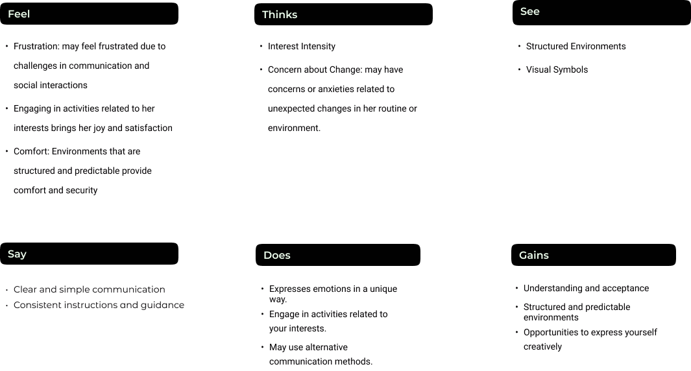
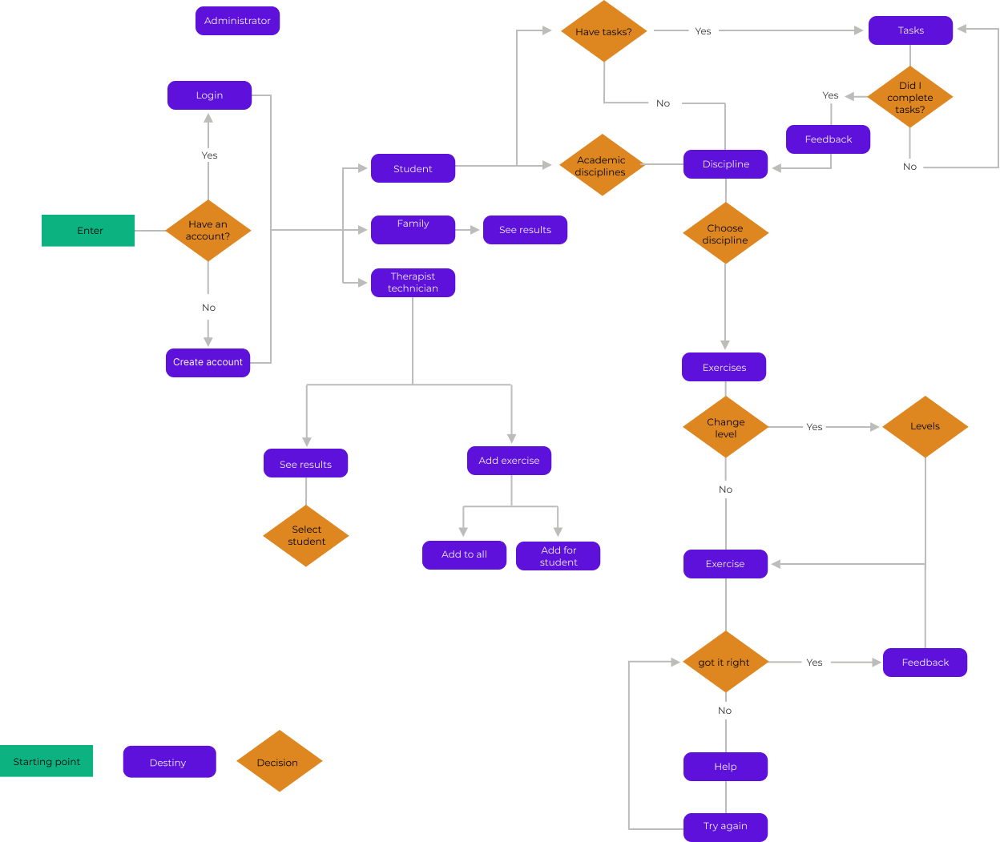

HABIL
Hero Academy: Brain Quest
Because every kid’s brain has superpowers
ABOUT THE PROJECT
Habil is a kid educational app that helps identify and address writing and math difficulties in each child, serving as predictors for preventing and reducing future academic challenges.
This UX case study aimed at understanding the needs of individuals with neurodevelopmental disorders, kids between 3 to 6 years old.
-
Client
Altice Foundation
-
Industry
Education
-
Date
December-April 2023
-
My role
Ux researcher and UX Designer
What is Neurodevelopmental Disorders?
Neurodevelopment is a brain's development of neurological pathways that influence performance or functioning (e.g.intellectual functioning, reading ability, social skills, memory, attention, or focus skills). Neurodevelopment disorders can be:
- - Atention deficit and hyperactivity disorder (ADHD)
- - Autism spectrum disorder (ASD)
- - Communication disorders
- - Intellectual developmental disorder
- - Motor disorders
- - Learning disorders
Discover: The Kid Detective Agency - Cracking the Code on What Kids Really Want
Secondary research
Neurodevelopment disorder in Portugal
In Portugal, the prevalence of Neurodevelopment disorder is 15.0% in the general population between 3 and 17 years of age.
The total number of Neurodevelopmental Pediatrics consultations increased from 38,238 (2007) to 99,815 (2017), that is, it almost tripled, an increase of 2.6% The number of professionals also doubled: pediatricians
increased from 82 to 156.
The significant increase in neurodevelopmental indicates a growing demand in this area, that means we have to focus on meeting the demand.


SWOT Analysis
Understanding how educational app stacks up against competitors is crucial for refining its unique value proposition. By identifying these key elements, I can craft strategies that capitalize on the app’s strengths, address its weaknesses, seize opportunities for innovation, and mitigate any potential threats from the competitive and regulatory environment. This comprehensive assessment will help guide future decision-making and strategic development.
Features competitive analysis
A competitive analysis was performed, focusing on the features that directly impact user experience.
This analysis not only highlights the core functionalities that differentiate the app but also identifies opportunities for innovation.
Over 100 apps were tested. This image is just a small sample.
Some findings:
- - A few apps in thhe market have accessibility features and those that have it, are usually text to speech
- - Almost non existent search bars
- - Very low % accessibility design
- - Almost educational apps have to pay a subscription
- - In general, the apps have a good design
- - In general, settings poorly designed and with few options

Subtile: Click on the image to zoom in
User research
The ethnography method was applied to an association of children with neurodevelopmental disorders
Define: The Puzzle Solver’s Club: Piecing Together the Mystery of the Problem
Problem
- - Different levels of cognitive ability
- - Children with different needs may have difficulty interacting with the application due to motor, visual or hearing limitations
- - Difficulty monitoring and evaluating children's progress effectively
- - Lack of neurodevelopment disorder market apps and accessibility
- - Difficulty in aligning the app with therapeutic objectives
- - Challenges in understanding the specific needs of children with neurodevelopment disorder
Empathy Map
User Persona
Ideate: The Imagination Playground: Building the Wildest, Whackiest Ideas
Solution
- - Incorporate such as simplified controls, voice options, and contrasting colors
- - Integrate alternative communication tools: ARASAAC
- - Design short, engaging activities with immediate feedback and rewards to maintain interest
- - Provide simple visual feedback
- - Offer customization options to adjust difficulty according to individual skills
- - Incorporate playful elements and captivating characters
- - Implement an adaptive system that automatically adjusts difficulty based on individual performance
- - Incorporate tracking and reporting tools for parents and educators
- - Offer different game modes to suit a inclusive activities that involve tactile, visual and sound stimulation, providing a complete and adaptable sensory experiencevariety of abilities
User overview
The Habil app aims to help children with neurodevelopmental disorders. The main target is children aged 3 to 6 years old. It also targets families, teachers and therapeutic agents and these individuals play essential roles in supporting, guiding, and assessing children's progress as they engage with the platform's activities and games.
App Overview
In this project, two platforms were developed: gaming app and the app's backoffice. The two platforms interconnect with each other.
The backoffice is used by administrator profiles, Neurodevelopment professionals and the child's family:
- - Administrator: possibility of adding new exercises from the application as complete management of the platform
- - Teachers and neurodevelopmental health professionals: management of students/patients, creation of study/exercise plans and analysis of exercise performance
- - Family/parents: access to the child’s exercise performance
The app is aimed at children. In the app, the child has two options: tasks and free mode.
Tasks are created by the therapist/psychologist/teacher through the backoffice and this information is sent to the app. After the child completes the tasks on the app, the back office will receive information and analysis such as: how many times they got it right, how many times they got it wrong, the time it took and repetitions. In the free mode option, the child will be able to choose the category, sub-category, exercise and level they want to play and practice.
Special Features: Accessibility and alternative communication
After extensive research and conversations with therapists in the Neurodeveloping field, we came to the conclusion that there was a big gap in the market and there was a lack of accessibility and alternative communication. The implementation of alternative communication and enhanced accessibility features in apps for kids can have a profound impact on various aspects of their development and well-being.
The following features were implemented in this project:
- - High Contrast
- - Text to speach
- - Scanning
- - Sign language
- - ARASAAC
Information architecture
User Flow
Prototype The Imagination Factory: Building My Own Awesome Inventions
Design Process
Style Guide
To choose the colors to use in the app, a large study was carried out on each disorder and to understand their behaviors. I did seconday reach and I downloaded and tested more than 100 games in the playstore. I also watched a considerable amount of cartoons for children.
It is important that different tones are explored during early childhood education to capture children's interest and awaken their curiosity. This is because one of the first characteristics that little ones use to differentiate objects is precisely color.
The sooner colorful stimulation is part of children's routine, the better their academic and social performance will be. Therefore, it is in early childhood education that this stimulus with colors needs to begin. After all, this is the phase of life in which cognition expands most quickly and a new and immense universe opens up to the small ones.
During early childhood education, it is important that the child develops the following skills related to colors:
- - Identify and recognize colors
- - Name the colors
- - Develop logical reasoning
- - Increase vocabulary and ways of understanding visual reality
- - Work as a team to build and identify colorful objects
- - Develop imagination and the capacity for abstraction and interpretation
What are the benefits of colors in early childhood education?
- - Motor coordination
- - Concentration and eye coordination
- - Sense of space and limits
- - Phonetic development
- - Association
By learning about colors, children become more aware of the colorful universe around them. From this, they begin to observe that certain things have specific colors, such as the blue of the sky, the green grass and the white of the clouds. In other words, children begin to be able to associate colors with objects. All of these benefits are also possible through specific activities that the school proposes for teaching colors in early childhood education.
Conclusion
The conclusion I reached out, young children we must use primary colors and just one shade. If we use two or more shades of the blue color, the kid could not understand or distinguish the difference between the two shades of blue because they don't have the recognition and the perception to distinguish different shades.
- - Orange: favorite color for kids who have autism because stimulating color that contributes to optimizing memory, joy, good-humor and critical thinking, especially by improving performance in evaluative activities, for example.
- - Blue: The second color people with neurodeveloping disorder likes because is soothe and relax.
Released version
In this project, I was the UX designer of the project initially but with the rush to move forward with the project and customers constantly asking to change things, it end up ruining the app's accessibility. Meanwhile I left and was relocated to other projects, even more changes were made and the current version that is on the Playstore is not the best approach to accessibility.
Accessibility Contrast Checker
.png)
.png)
.png)
.png)
Prototype
UX 2.0: The Comeback No One Saw Coming
Revamp
Still in working progress!